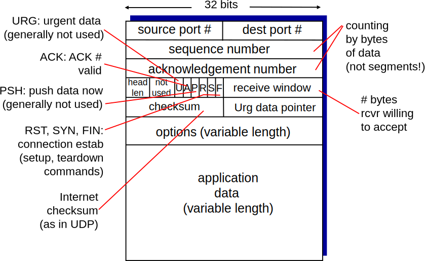
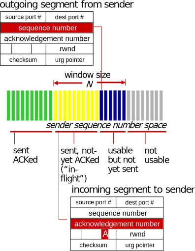
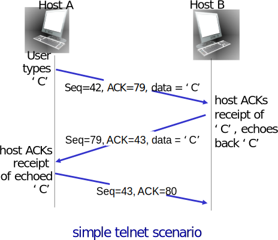

Aula 9 - Transmissão Confiável (II), Pipeline, Introdução ao TCP
Diego Passos
Universidade Federal Fluminense
Redes de Computadores
Material adaptado a partir dos slides originais de J.F Kurose and K.W. Ross.
rdt3.0: Canal com Erros e Perdas
- Nova hipótese:
- Canal (rede) pode também descartar pacotes (tanto dados, quanto ACKs).
- Checksum, # de sequência, ACKs, retransmissões ajudarão... mas não serão suficientes.
- Abordagem: transmissor aguarda ACK por um tempo “razoável”.
- Retransmite pacote se ACK não é recebido neste período.
- Se o pacote (ou seu ACK) estão simplesmente atrasados (e não perdidos):
- Retransmissão será duplicada, mas # de sequência já lida com isso.
- Receptor deve especificar # de sequência do pacote sendo reconhecido pelo ACK.
- Requer um temporizador regressivo.
Desempenho do rdt3.0
- rdt3.0 funciona, mas desempenho é péssimo.
- e.g., enlace de 1 Gb/s, com 15 ms de atraso de propagação, pacote de 8000 bits:
\(D_{trans} = \frac{L}{R} = \frac{8000}{10^9} = 8\;\mu s\)
- \(U_{sender}\): utilização — fração do tempo em que transmissor efetivamente usa o canal.
\(U_{sender} = \frac{L/R}{RTT + L/R} = \frac{0{,}008}{30{,}008} = 0{,}00027\)
- Se RTT=30 ms, um pacote de 1 KB é enviado a cada 30 ms.
- Vazão de 33 kB/s em enlace de 1 Gb/s
- Protocolo está limitando o uso dos recursos físicos!
rdt3.0: Operação do Tipo Stop-and-Wait
\(U_{sender} = \frac{L/R}{RTT + L/R} = \frac{0{,}008}{30{,}008} = 0{,}00027\)
Protocolos Baseados em Pipeline
Protocolos Baseados em Pipeline
- Pipeline: permite que transmissor tenha múltiplos segmentos em trânsito.
- i.e., segmentos enviados, mas com ACK ainda pendente.
- Faixa dos números de sequência precisa ser aumentada.
- Buffers necessários no transmissor e/ou no receptor.
- Duas formas genéricas de protocolos baseados em pipeline: go-Back-N e repetição seletiva.
Pipeline: Aumentando a Utilização
\(U_{sender} = \frac{3L/R}{RTT + L/R} = \frac{0{,}0024}{30{,}008} = 0{,}00081\)
Três vezes mais que no Stop-and-Wait.
Protocolos Baseados em Pipeline: Visão Geral
- Go-back-N:
- Transmissor pode ter até N segmentos em trânsito no pipeline.
- Receptor envia apenas ACKs cumulativos.
- Não reconhece pacote se há um “buraco”.
- Transmissor possui um temporizador para o pacote mais antigo em trânsito.
- De menor número de sequência.
- Quando o temporizador expira, todos os pacotes em trânsito são retransmitidos.
- Repetição Seletiva:
- Transmissor pode ter até N segmentos em trânsito no pipeline.
- Receptor envia ACKs seletivos.
- i.e., segmentos são reconhecidos individualmente.
- Transmissor mantém um timer para cada pacote em trânsito.
- Quanto temporizador expira, apenas segmento correspondente é retransmitido.
Go-Back-N: Transmissor
- Cabeçalho do segmento contém campo de k bits para o # de sequência.
- “Janela de até N” pacotes em trânsito consecutivos.
- ACK(n): reconhece todos os pacotes, incluindo o de # de sequência n.
- ACK cumulativo.
- ACKs repetidos podem ser recebidos (vide receptor).
- Temporizador para o segmento em trânsito mais antigo.
- Quando expira, todos os pacotes em trânsito são retransmitidos.
Go-Back-N: Máquina de Estados do Transmissor
Go-Back-N: Máquina de Estados do Receptor
- Apenas ACK: sempre envia ACK para segmentos corretos reconhecendo recebimento do maior # de sequência em ordem.
- Pode gerar ACKs duplicados.
- Precisa se lembrar apenas do próximo número de sequência esperado.
- Pacote fora de ordem:
- Descartado (não é armazenado em buffer): sem buffer de recepção.
- Mesmo assim, receptor gera ACK para maior # de sequência já recebido em ordem.
Repetição Seletiva
- Receptor reconhece segmentos recebidos corretamente de forma individual.
- Segmentos recebidos fora de ordem são colocados em buffer para posterior entrega à aplicação.
- Transmissor reenvia apenas segmentos para os quais o ACK ainda não foi recebido.
- Um temporizador para cada segmento em trânsito.
- Janela do transmissor:
- N números de sequência consecutivos.
- Limita número de segmentos em trânsito.
Repetição Seletiva: Janelas do Transmissor e do Receptor
Repetição Seletiva: Eventos
Transmissor
- Dado da aplicação:
- Se há # de sequência disponível na janela, transmita segmento.
- timeout(n):
- Retransmita pacote n, reinicie temporizador.
- ACK(n):
- Marque pacote n como recebido.
- Se n é o menor # de sequência na janela, avance base da janela para o próximo # de sequência não reconhecido/disponível.
Receptor
- Segmento n recebido (\(rcvbase \le n < rcvbase + N\)).
- Transmita ACK(n).
- Se fora de ordem: armazene em buffer.
- Se em ordem, entregue todos os dados contíguos, avance janela para próxima lacuna.
- Segmento n recebido (\(rcvbase - N \le n < rcvbase\)).
- Outros:
Repetição Seletiva em Ação
Repetição Seletiva: Dilema
- Exemplo:
- # de sequência disponíveis: 0, 1, 2, 3.
- Tamanho da janela: 3.
- Receptor não vê diferença nos dois cenários!
- No segundo, dados entregues à aplicação duplicados.
- Pergunta: qual a relação entre o # de sequência e o tamanho da janela para evitar o problema?
TCP: Visão Geral [RFCs: 793, 1122, 1323, 2018, 2581]
- Ponto-a-ponto:
- Um transmissor, um receptor.
- Fluxo de bytes confiável, ordenado:
- Sem “fronteiras entre mensagens”.
- Baseado em Pipeline:
- Controle de fluxo e controle de congestionamento configuram tamanho da janela.
- Comunicação full-duplex:
- Dados podem fluir nas duas direções em uma mesma conexão.
- MSS: Maximum Segment Size.
- Orientado a conexão:
- Um handshake (troca de mensagens de controle) inicia os estados no transmissor, receptor antes da troca de dados.
- Controle de fluxo:
- Transmissor não afogará o receptor.
Estrutura de um Segmento TCP

TCP: # de Sequência, ACKs (I)
- Números de sequência:
- “Índice” do primeiro byte do segmento no fluxo de bytes.
- ACKs:
- Número de sequência do próximo byte esperado pelo receptor.
- ACKs cumulativos.
- Pergunta: como o receptor lida com segmentos fora de ordem?
- Resposta: especificação do TCP não diz — decisão do implementador.

TCP: # de Sequência, ACKs (II)
